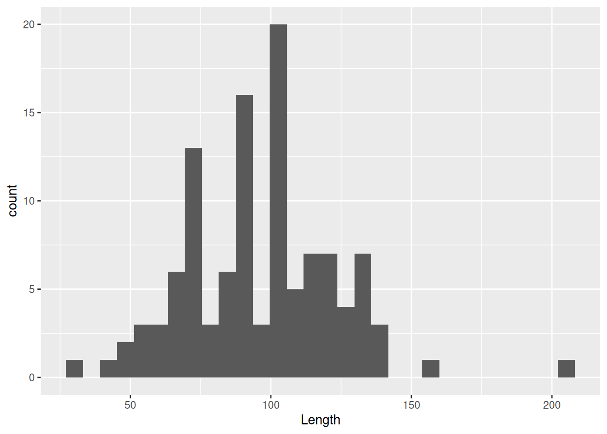
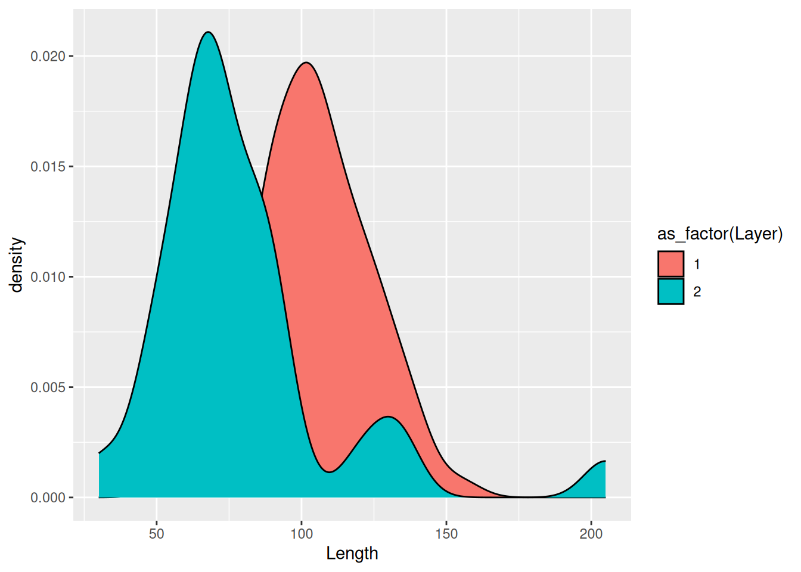
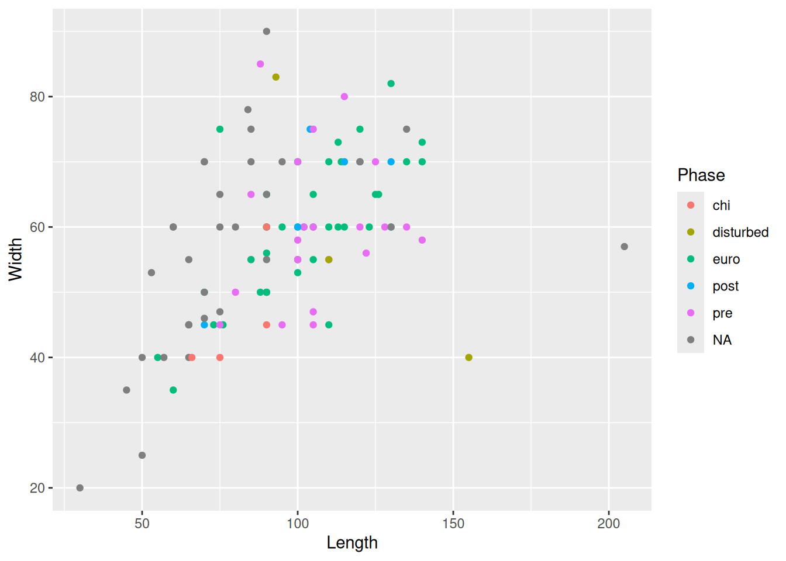
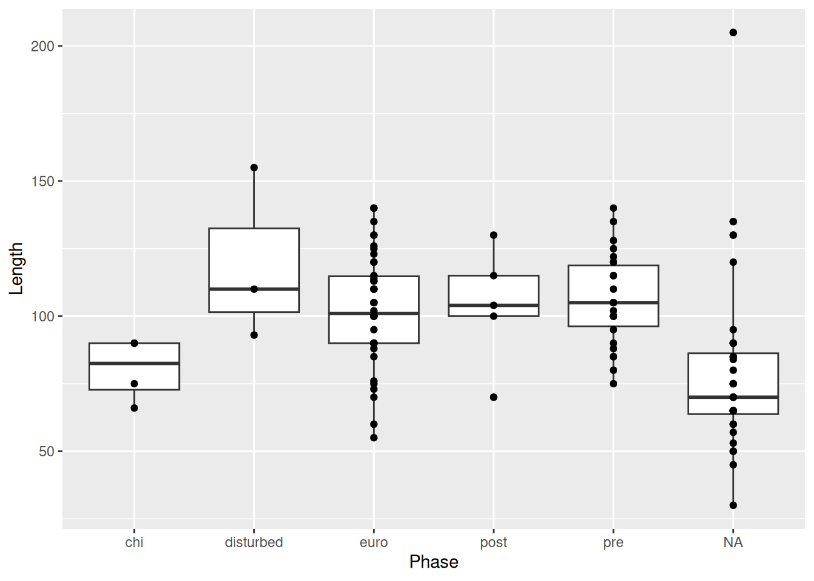
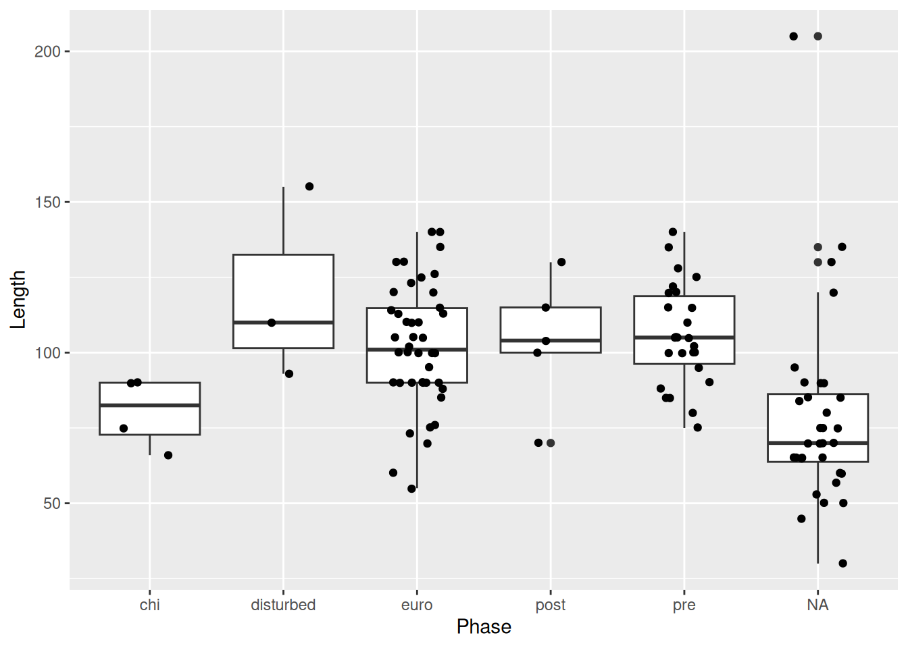
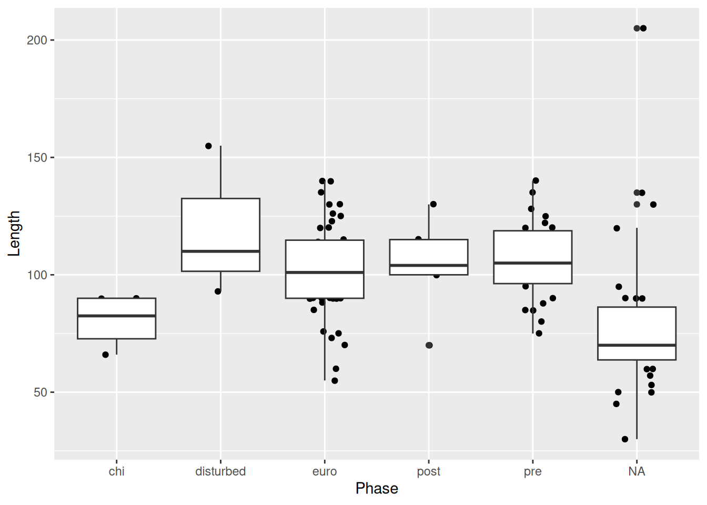
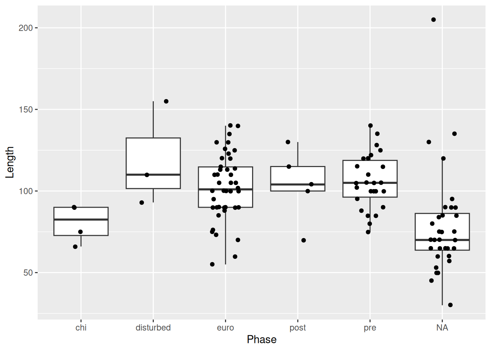
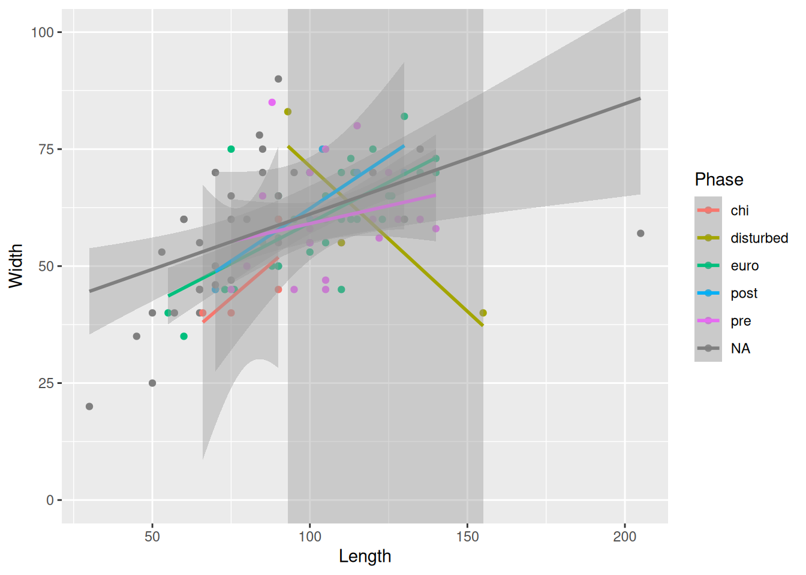

mortuary_data |>
ggplot()EDA: Visualising data with ggplot2
Prerequisites
Knowledge
Core
Objects
Project organisation + Data cleaning
Plotting is a great way of exploring the distribution of, and relationships between our variables. They also often offer a lot more insights into our variables than many statistical tests, and are therefore a crucial part of data analysis.
Setup
Start a new script and save it as 01_data-viz.R in the scripts/ folder.
The ggplot2 package is part of tidyverse, so we can just load tidyverse and upload our data. We are doing this again so the new script will be self-contained and not rely on the previous script we created.
library(tidyverse)
library(here)
mortuary_data <- read_csv(here("data/data_clean.csv"))Basic usage of ggplot2
The anatomy of a standard ggplot (with pipe) is:
data |>
ggplot(aes(<mappings>)) +
<geometric function> +
<customisations>Where mappings are our variables, for example on the X and Y axes. We start with our data, the mortuary_data data frame and pipe that into ggplot(). We can do this because data is the first argument in ggplot().
This gives us a blank grey background, because all we’ve told R is that we want a plot. We can define how our variables are mapped to the visual properties of the plot by adding variables to the mapping argument through the aesthetics function. In short, we will define the x- and y-axis.
mortuary_data |>
ggplot(mapping = aes(x = Length, y = Width))This gives a little more structure to the plot, since the variables can define the limits of the axes.
Then we can define the geometrical object used to represent our data; essentially what type of plot we want to use. We can do this using the geom_*() functions. To produce a scatter plot we can use geom_point().
mortuary_data |>
ggplot(mapping = aes(x = Length, y = Width)) +
geom_point()Warning: Removed 13 rows containing missing values or values outside the scale range
(`geom_point()`).
We now have a base plot to which we can add additional mappings and layers to increase the complexity and improve the aesthetics of the plot. First, let’s focus on the different types of variables and how we can plot them.
Categorical variables
A common way to visualise a single categorical variable is with a bar plot.
mortuary_data |>
ggplot(aes(x = Phase)) +
geom_bar()
This gives us a quick count of burials (rows) in each Phase of occupation.
Because Phase is a factor, geom_bar() will count how many times each level of Phase occurs.
Factors
A factor is a type of data that has categories encoded in the object. If we take a look at Phase, we can see that it has many strings that are not unique. They are confined to the values chi, disturbed, euro, post, pre.
Those values are called the levels() of a variable.
levels(mortuary_data$Phase)NULLIf the output is NULL it means our variable is not a factor.
We can convert a variable to a factor using as_factor() from the forcats package (part of tidyverse), or as.factor() from base R. It’s only temporary because we’re not assigning it to an object.
as_factor(mortuary_data$Phase) [1] pre euro post euro euro euro pre
[8] euro pre post euro pre euro euro
[15] euro euro euro euro pre euro euro
[22] euro pre euro pre pre euro euro
[29] euro pre euro pre euro euro <NA>
[36] <NA> euro euro <NA> euro euro euro
[43] euro pre <NA> <NA> pre <NA> euro
[50] pre pre <NA> <NA> euro euro euro
[57] euro <NA> <NA> <NA> euro <NA> pre
[64] post euro pre <NA> pre euro pre
[71] <NA> chi chi chi chi euro pre
[78] pre pre pre post post pre disturbed
[85] disturbed disturbed disturbed euro pre pre <NA>
[92] euro euro pre pre pre pre <NA>
[99] <NA> euro euro euro euro <NA> <NA>
[106] <NA> <NA> disturbed <NA> <NA> <NA> <NA>
[113] <NA> <NA> <NA> <NA> <NA> <NA> disturbed
[120] disturbed <NA> <NA> <NA> <NA> disturbed
Levels: pre euro post chi disturbedWe can see some additional information about the levels that is not included in a regular character vector: Levels: pre euro post chi disturbed. We can now extract this information using levels().
levels(as_factor(mortuary_data$Phase))[1] "pre" "euro" "post" "chi" "disturbed"We can also count the number of levels with nlevels().
nlevels(as_factor(mortuary_data$Phase))[1] 5And we can order the levels of our factor
factor(
mortuary_data$Phase,
levels = c("chi", "pre", "euro", "post", "disturbed"),
ordered = T # the order given in levels becomes the order of the levels
) [1] pre euro post euro euro euro pre
[8] euro pre post euro pre euro euro
[15] euro euro euro euro pre euro euro
[22] euro pre euro pre pre euro euro
[29] euro pre euro pre euro euro <NA>
[36] <NA> euro euro <NA> euro euro euro
[43] euro pre <NA> <NA> pre <NA> euro
[50] pre pre <NA> <NA> euro euro euro
[57] euro <NA> <NA> <NA> euro <NA> pre
[64] post euro pre <NA> pre euro pre
[71] <NA> chi chi chi chi euro pre
[78] pre pre pre post post pre disturbed
[85] disturbed disturbed disturbed euro pre pre <NA>
[92] euro euro pre pre pre pre <NA>
[99] <NA> euro euro euro euro <NA> <NA>
[106] <NA> <NA> disturbed <NA> <NA> <NA> <NA>
[113] <NA> <NA> <NA> <NA> <NA> <NA> disturbed
[120] disturbed <NA> <NA> <NA> <NA> disturbed
Levels: chi < pre < euro < post < disturbedNotice the difference between an ordered and unordered factor
Unordered: Levels: pre euro post chi disturbed Ordered: Levels: chi < pre < euro < post < disturbed
Two categorical variables
For two categorical variables we can use… bar plots! We can add a variable by mapping it in the aesthetics.
mortuary_data |>
ggplot(aes(x = Phase, fill = Condition)) +
geom_bar()Warning: The following aesthetics were dropped during statistical transformation: fill.
ℹ This can happen when ggplot fails to infer the correct grouping structure in
the data.
ℹ Did you forget to specify a `group` aesthetic or to convert a numerical
variable into a factor?Based on the warning message, it seems ggplot() was unable to automatically convert Condition to a factor. This is probably because the levels of conditions are numeric, and not strings like Phase. We need to explicitly convert Condition to a factor.
We could do this as part of the pipe
mortuary_data |>
mutate(Condition = as_factor(Condition)) |>
ggplot(aes(x = Phase, fill = Condition)) +
geom_bar()
or do it in aes()
mortuary_data |>
ggplot(aes(x = Phase, fill = as_factor(Condition))) +
geom_bar()Now we have a bar plot with two variables. If it’s difficult to assess counts of the different conditions, we can change it from a stacked bar plot to… whatever this is:
mortuary_data |>
ggplot(aes(x = Phase, fill = as_factor(Condition))) +
geom_bar(position = "dodge")
And if we, like in this case, have highly variable counts (there are clearly a larger number of burials in the euro and pre groups) we can use proportions instead of absolute counts.
mortuary_data |>
ggplot(aes(x = Phase, fill = as_factor(Condition))) +
geom_bar(position = "fill")
This standardises the counts across all phases and allows us to compare counts across Phase.
There are also pie charts, but these should be used very sparingly because it is difficult to distinguish between levels of a categorical variable if there are too many. They are also weirdly complicated to make with ggplot2.
mortuary_data |>
ggplot(aes(x = "", fill = Phase)) +
geom_bar(width = 1) +
coord_polar("y", start = 0) +
theme_void()
Quick, which is bigger, NA or euro? What about chi, disturbed, and post?
Continuous variables
Histogram
Perhaps one of the simplest ways to visualise continuous variables is with a histogram. All you need is one continuous variable, for example Length.
mortuary_data |>
ggplot(aes(x = Length)) +
geom_histogram()`stat_bin()` using `bins = 30`. Pick better value with `binwidth`.Warning: Removed 13 rows containing non-finite outside the scale range
(`stat_bin()`).This allows us to see the distribution of a continuous variable with the observations grouped into ‘bins’ of a specific size. The taller the bars, the more observations are in the bins. We can create larger bins or reduce the number of bins, which will change the shape of the plot. Typically you might want to adjust this if you have many gaps in your histogram.
mortuary_data |>
ggplot(aes(x = Length)) +
geom_histogram(bins = 10)Warning: Removed 13 rows containing non-finite outside the scale range
(`stat_bin()`).You can also reduce the bin size or increase the number of bins
mortuary_data |>
ggplot(aes(x = Length)) +
geom_histogram(bins = 40)Warning: Removed 13 rows containing non-finite outside the scale range
(`stat_bin()`).
Beware mixing symbols
A common mistake when creating a ggplot is to use the pipe, |>, instead of the plus symbol, +, for layering elements of the plot. Fortunately, there is a helpful error message.
mortuary_data |>
ggplot(mapping = aes(x = Length, y = Width)) |>
geom_point()Error in geom_point(ggplot(mortuary_data, mapping = aes(x = Length, y = Width))) :
`mapping` must be created by `aes()`.
ℹ Did you use `%>%` or `|>` instead of `+`?Density
If you’re not a fan of the bars (and the middle-finger aesthetic) you can instead choose a density plot, which uses a kernel density estimate to provide a smoothed version of a histogram.
mortuary_data |>
ggplot(aes(x = Length)) +
geom_density()Warning: Removed 13 rows containing non-finite outside the scale range
(`stat_density()`).Instead of binning observations we are provided with a continuous density of observations. We can see from the plot that we pretty much have a normal distribution. This becomes especially clear if we insert the mean value. We can do that by using geom_vline() to insert a dashed vertical line at the mean of Length.
mortuary_data |>
ggplot(aes(x = Length)) +
geom_density() +
geom_vline(
xintercept = mean(mortuary_data$Length, na.rm = T),
linetype = "dashed"
)Warning: Removed 13 rows containing non-finite outside the scale range
(`stat_density()`).
We can compare the distribution of a variable between groups using the fill aesthetic. For example, we can compare the two excavation Layers.
mortuary_data |>
ggplot(aes(x = Length, fill = as_factor(Layer))) +
geom_density()Warning: Removed 13 rows containing non-finite outside the scale range
(`stat_density()`).To make each distribution more visible, we can make the fill of each distribution more transparent using the alpha argument.
mortuary_data |>
ggplot(aes(x = Length, fill = as_factor(Layer))) +
geom_density(alpha = 0.6)Warning: Removed 13 rows containing non-finite outside the scale range
(`stat_density()`).What alpha does is control the level of opacity of the fill, where 1 is a solid colour and 0 is completely transparent.
If there are too many levels in a fill variable, a better option may be to separate them with facet_wrap.
mortuary_data |>
filter(Phase != "disturbed") |>
ggplot(aes(x = Length, fill = Phase)) +
geom_density(alpha = 0.6) +
facet_wrap(~ Phase)Warning: Removed 5 rows containing non-finite outside the scale range
(`stat_density()`).For an even better comparison we can force them into a single column.
mortuary_data |>
filter(Phase != "disturbed") |>
ggplot(aes(x = Length, fill = Phase)) +
geom_density(alpha = 0.6) +
facet_wrap(~ Phase, ncol = 1)Warning: Removed 5 rows containing non-finite outside the scale range
(`stat_density()`).
To visualise two continuous variables, we can use a scatterplot, which was already introduced in An Example Workflow.
mortuary_data |>
ggplot(aes(x = Length, y = Width)) +
geom_point()Warning: Removed 13 rows containing missing values or values outside the scale range
(`geom_point()`).The plot is admittedly a bit dull. To fix this we can add some colour to our geomteric object. We can add the same colour to all the points
mortuary_data |>
ggplot(aes(x = Length, y = Width)) +
geom_point(colour = "red")Warning: Removed 13 rows containing missing values or values outside the scale range
(`geom_point()`).
or to groupings in the data by mapping a variable to colour in the aesthetics.
mortuary_data |>
ggplot(aes(x = Length, y = Width)) +
geom_point(aes(colour = Phase))Warning: Removed 13 rows containing missing values or values outside the scale range
(`geom_point()`).Similarly we can change the size and shape of all the points
mortuary_data |>
ggplot(aes(x = Length, y = Width)) +
geom_point(aes(col = Phase), size = 4, shape = 2)Warning: Removed 13 rows containing missing values or values outside the scale range
(`geom_point()`).or map a variable to size and shape
mortuary_data |>
ggplot(aes(x = Length, y = Width)) +
geom_point(aes(col = Phase, size = Height, shape = as_factor(Layer)))Warning: Removed 14 rows containing missing values or values outside the scale range
(`geom_point()`).But don’t go overboard or you’ll make it completely unreadible!
Mixed categorical and continuous variables
When mixing categorical and continuous variables, a box plot is a reasonable choice, with notable limitations.
mortuary_data |>
ggplot(aes(y = Length, x = Phase)) +
geom_boxplot()Warning: Removed 13 rows containing non-finite outside the scale range
(`stat_boxplot()`).
Box plots are useful, but contain limited information. How many observations are there? How are the observations distributed?

This is where the layering mechanism of ggplot2 really shines. We can add points to the plot with geom_point().
mortuary_data |>
ggplot(aes(y = Length, x = Phase)) +
geom_boxplot() +
geom_point()Warning: Removed 13 rows containing non-finite outside the scale range
(`stat_boxplot()`).Warning: Removed 13 rows containing missing values or values outside the scale range
(`geom_point()`).But this isn’t much better. Because the x-axis is discrete, all the points are lined up in a few columns. A better option is geom_jitter().
mortuary_data |>
ggplot(aes(y = Length, x = Phase)) +
geom_boxplot() +
geom_jitter()Warning: Removed 13 rows containing non-finite outside the scale range
(`stat_boxplot()`).Warning: Removed 13 rows containing missing values or values outside the scale range
(`geom_point()`).
geom_jitter() is similar to geom_point(), but instead of plotting the points at there exact x and y values, it adds some random noise to each point on the x- and y-axis, which allows us to see all the observations, which otherwise would have been on top of one another.
We can reduce the amount of random noise with the height and width arguments. This is particularly useful if it’s hard to tell what the original value was, or if, like in our case, it’s hard to tell which category a point belongs to.
mortuary_data |>
ggplot(aes(y = Length, x = Phase)) +
geom_boxplot() +
geom_jitter(
width = 0.2,
height = 0.2
)Warning: Removed 13 rows containing non-finite outside the scale range
(`stat_boxplot()`).Warning: Removed 13 rows containing missing values or values outside the scale range
(`geom_point()`).
Now it’s very clear to which Phase each point belongs, but we’re also still able to see all of the points in our data.
Order matters
PSA: Beware the order in which you layer your geometric objects.
mortuary_data |>
ggplot(aes(y = Length, x = Phase)) +
geom_jitter(
width = 0.2,
height = 0.2
) +
geom_boxplot() # the boxes will be in front of the pointsWarning: Removed 13 rows containing non-finite outside the scale range
(`stat_boxplot()`).Warning: Removed 13 rows containing missing values or values outside the scale range
(`geom_point()`).
One final note when overlaying a box plot with points. The outliers of the box plot will be visible along with the actual outlier shown with geom_jitter(). Therefore it’s necessary to suppress the outliers from the box plot.
mortuary_data |>
ggplot(aes(y = Length, x = Phase)) +
geom_boxplot(
outlier.shape = NA
) +
geom_jitter(
width = 0.2,
height = 0.2
)Warning: Removed 13 rows containing non-finite outside the scale range
(`stat_boxplot()`).Warning: Removed 13 rows containing missing values or values outside the scale range
(`geom_point()`).We could also have used outlier.colour = "transparent" for the same result.
If there were too many points on the plot, we could use geom_violin instead of geom_jitter to show the underlying distribution.
mortuary_data |>
ggplot(aes(y = Length, x = Phase)) +
geom_violin() +
geom_boxplot(
outlier.shape = NA
)Warning: Removed 13 rows containing non-finite outside the scale range
(`stat_ydensity()`).Warning: Removed 13 rows containing non-finite outside the scale range
(`stat_boxplot()`).And make some adjustments to the boxplot size and violin fill to make the plot more legible, and remove the legend since it doesn’t contain any extra information.
mortuary_data |>
ggplot(aes(y = Length, x = Phase)) +
geom_violin(aes(fill = Phase)) +
geom_boxplot(
width = 0.2,
outlier.shape = NA
) +
theme(legend.position = "none")Warning: Removed 13 rows containing non-finite outside the scale range
(`stat_ydensity()`).Warning: Removed 13 rows containing non-finite outside the scale range
(`stat_boxplot()`).
Since our new dataset has a number of missing variables, the plot looks a little different. Adding a shape seems to have removed our NAs, which is not what we want. We need to define the shape that is used for missing values with a scale function. Scales help control the mapping of data to aesthetics, including size, colour, and shape. To modify the shape of a discrete variable Phase, we use the scale_shape_discrete() function and the na.value argument.
mortuary_data |>
ggplot(aes(x = Length, y = Width)) +
geom_point(aes(colour = Phase, shape = Phase)) +
geom_smooth(method = "lm") +
scale_shape_discrete(na.value = 10)Giving the value 10 is just defining which shape we want to use. The book ggplot2: Elegant Graphics for Data Analysis has a legend of the available shapes and their values (and lots of other useful info!)
Alternate examples
We could look at the trendlines for each level of Phase.
mortuary_data |>
ggplot(aes(x = Length, y = Width, colour = Phase)) +
geom_point() +
geom_smooth(method = "lm")`geom_smooth()` using formula = 'y ~ x'Warning: Removed 13 rows containing non-finite outside the scale range
(`stat_smooth()`).Warning: Removed 13 rows containing missing values or values outside the scale range
(`geom_point()`).The error bands are making it kinda difficult to see the plot, so we can remove them with se = FALSE.
mortuary_data |>
ggplot(aes(x = Length, y = Width, colour = Phase)) +
geom_point() +
geom_smooth(method = "lm", se = FALSE)`geom_smooth()` using formula = 'y ~ x'Warning: Removed 13 rows containing non-finite outside the scale range
(`stat_smooth()`).Warning: Removed 13 rows containing missing values or values outside the scale range
(`geom_point()`).Or, we could instead remove the Phase that is causing the huge error bands; in this case, disturbed.
mortuary_data |>
filter(Phase != "disturbed") |>
ggplot(aes(x = Length, y = Width, colour = Phase)) +
geom_point() +
geom_smooth(method = "lm")
or we could zoom in using coord_cartesian() by defining the limits of the axes we want to show on the plot.
mortuary_data |>
ggplot(aes(x = Length, y = Width, colour = Phase)) +
geom_point() +
geom_smooth(method = "lm") +
coord_cartesian(ylim = c(0,100))The benefit of the latter approach is that we are still seeing the plot with the full data and just zooming in to get a better look.
Because we are providing the colour mapping in the ggplot(), all geoms inherit this value. If we just want to look at the overall relationship, we can move the colour mapping to geom_point(), which will allow us to keep the Phase colours and see the overall trendline for the data.
mortuary_data |>
ggplot(aes(x = Length, y = Width)) +
geom_point(aes(colour = Phase)) +
geom_smooth(method = "lm")Now for some finishing touches. There are many reasons why only using colours to convey information is a bad idea. Think about colour perception, and that publishers charge you extra for colour printing. So let’s make each Phase a different shape as well.
mortuary_data |>
ggplot(aes(x = Length, y = Width)) +
geom_point(aes(colour = Phase, shape = Phase)) +
geom_smooth(method = "lm")Then we will modify the labels of the plot to convey a little more information.
mortuary_data |>
ggplot(aes(x = Length, y = Width)) +
geom_point(aes(colour = Phase, shape = Phase)) +
geom_smooth(method = "lm") +
labs(
x = "Length in cm",
y = "Width in cm",
colour = "Phase of occupation",
shape = "Phase of occupation"
) # we have to change both colour and shape to keep a single legendAs a final touch, we will add a colour palette that is more friendly to colour-deficient vision and change the background of the plot (the grey background is surprisingly controversial in the R community).
mortuary_data |>
ggplot(aes(x = Length, y = Width)) +
geom_point(aes(colour = Phase, shape = Phase)) +
geom_smooth(method = "lm") +
labs(
x = "Length in cm",
y = "Width in cm",
colour = "Phase of occupation",
shape = "Phase of occupation"
) +
scale_colour_viridis_d() + # new palette
scale_shape_discrete(na.value = 10) +
theme_minimal() # minimal background
Saving your masterpiece for posterity
To save a plot we can use ggsave() and provide a file path for the figure output. By default it will save the most recent plot. To save a specific plot, we need to save the plot as an object and provide it as an argument to ggsave().
mortuary_data |>
ggplot(aes(x = Length, y = Width)) +
geom_point(aes(colour = Phase, shape = Phase)) +
geom_smooth(method = "lm") +
labs(
x = "Length in cm",
y = "Width in cm",
colour = "Phase of occupation",
shape = "Phase of occupation"
) +
scale_colour_viridis_d() + # new palette
theme_minimal() # minimal background`geom_smooth()` using formula = 'y ~ x'Warning: Removed 13 rows containing non-finite outside the scale range
(`stat_smooth()`).Warning: Removed 45 rows containing missing values or values outside the scale range
(`geom_point()`).
We will save the plot in the figures/ folder and call it burial-dim-scatter.png.
ggsave(mortuary_sex_pl, here("figures/burial-dim-scatter.png"))If you’re submitting to a journal that has figure requirements, you can adjust the arguments such as height, width, and dpi.
args(ggsave)function (filename, plot = last_plot(), device = NULL, path = NULL,
scale = 1, width = NA, height = NA, units = c("in", "cm",
"mm", "px"), dpi = 300, limitsize = TRUE, bg = NULL,
create.dir = FALSE, ...)
NULL